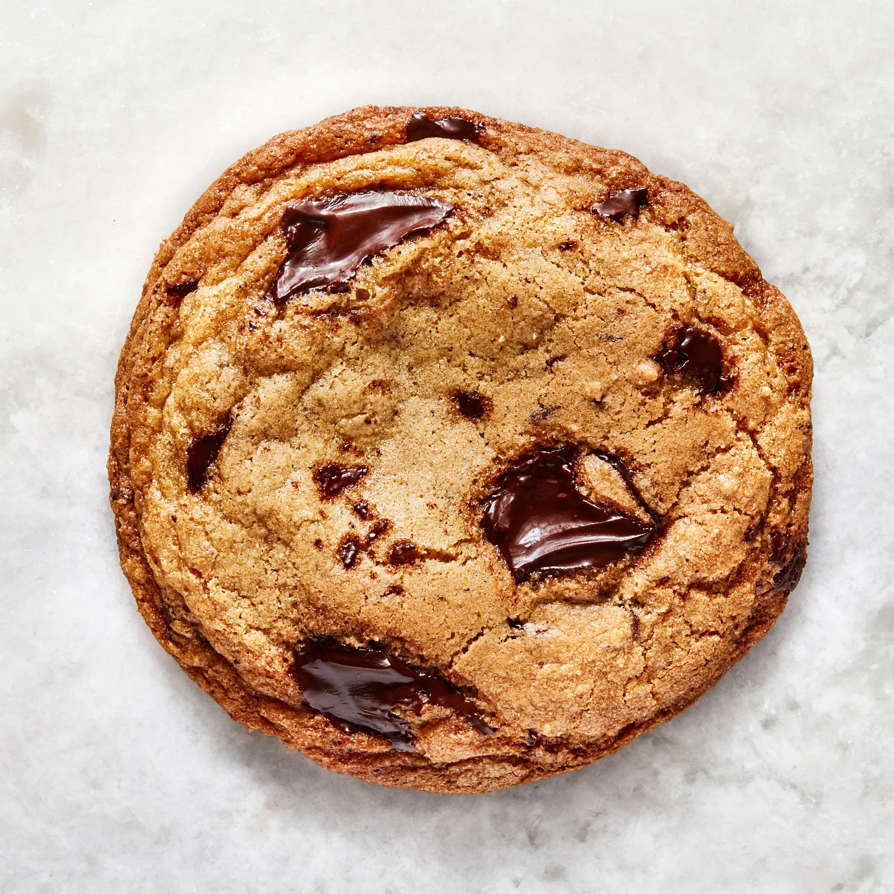

Chocolate Chip Cookies

Description
The cookies are rooted in classic Toll House flavor, but browning the butter amps up the toasty notes and is key in developing the balance of crisp edges, while a high ratio of brown sugar to white sugar ensures chewy chocolate chip cookie centers.
Ingredients
- 1.5 cups AP Flour
- 3/4 Tsp Kosher Salt
- 3/4 Tsp baking soda
- 3/4 Cup Butter
- 1 cup packed brown sugar
- 1/4 cup granulated sugar
- 1 large egg
- 2 large egg yokes
- 1 tbsp vanilla extract
- 6oz bittersweet chocolate
Steps
- Preheat oven to 375F
- Mix dry ingredients except sugars and set aside
- cook 1/2 cup butter in a large saucepan over medium heat until browned. Then let cool 1 minute in a heat proof bowl and then add remaining 1/4 cup butter and mix until melted
- Mix both sugars and the butter together then add eggs and vanilla
- Fold dry ingredients into the wet and then fold in the chocolate
- Let dough sit in the refrigerator for at least 10 minutes
- Portion out 16 balls of dough and divide evenly between two parchment lined baking sheets
- Bake until golden brown and firm on the edges, 8-10 minutes